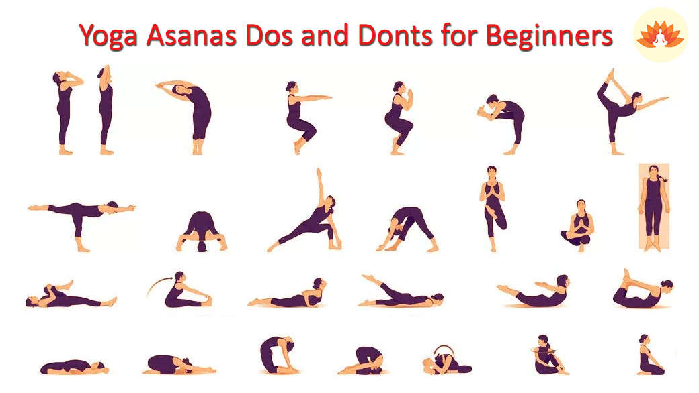

ABOUT YOGA
LYoga (/ˈjoʊɡə/ (listen);[1] Sanskrit: योग, lit. 'yoke' or 'union' pronounced [joːɡɐ]) is a group of
physical, mental, and spiritual practices or disciplines which originated in ancient India and aim
to control (yoke) and still the mind, recognizing a detached witness-consciousness untouched by the
mind (Chitta) and mundane suffering (Duḥkha). There is a wide variety of schools of yoga, practices,
and goals[2] in Hinduism, Buddhism, and Jainism,[3][4][5] and traditional and modern yoga is
practiced worldwide.[6]
Two general theories exist on the origins of yoga. The linear model holds that yoga originated in
the Vedic period, as reflected in the Vedic textual corpus, and influenced Buddhism; according to
author Edward Fitzpatrick Crangle, this model is mainly supported by Hindu scholars. According to
the synthesis model, yoga is a synthesis of non-Vedic and Vedic elements; this model is favoured in
Western scholarship.[7][8]
Yoga-like practices are first mentioned in the Rigveda.[9] Yoga is referred to in a number of the
Upanishads.[10][11][12] The first known appearance of the word "yoga" with the same meaning as the
modern term is in the Katha Upanishad,[13][14] which was probably composed between the fifth and
third centuries BCE.[15][16] Yoga continued to develop as a systematic study and practice during the
fifth and sixth centuries BCE in ancient India's ascetic and Śramaṇa movements.[17] The most
comprehensive text on Yoga, the Yoga Sutras of Patanjali, date to the early centuries of the Common
Era;[18][19][note 1] Yoga philosophy became known as one of the six orthodox philosophical schools
(Darśanas) of Hinduism in the second half of the first millennium CE.[20][web 1] Hatha yoga texts
began to emerge between the ninth and 11th centuries, originating in tantra.[21][22]
The term "yoga" in the Western world often denotes a modern form of Hatha yoga and a posture-based
physical fitness, stress-relief and relaxation technique,[23] consisting largely of asanas;[24] this
differs from traditional yoga, which focuses on meditation and release from worldly
attachments.[23][25] It was introduced by gurus from India after the success of Swami Vivekananda's
adaptation of yoga without asanas in the late 19th and early 20th centuries.[26] Vivekananda
introduced the Yoga Sutras to the West, and they became prominent after the 20th-century success of
hatha yoga.[27]hlo
Welcome to Knowledge of yoga


What is yoga
Yoga is an ancient and complex practice, rooted in Indian philosophy. It began as a spiritual
practice
but has
become popular as a way of promoting physical and mental well-being.
Although classical yoga also includes other elements, yoga as practiced in the United States
typically
emphasizes physical postures (asanas), breathing techniques (pranayama), and meditation (dyana).
There are many different yoga styles, ranging from gentle practices to physically demanding ones.
Differences in
the types of yoga used in research studies may affect study results. This makes it challenging to
evaluate
research on the health effects of yoga.
Yoga and two practices of Chinese origin—tai chi and qigong—are sometimes called “meditative
movement”
practices. All three practices include both meditative elements and physical ones.
What are the health benefits of yoga?
Research suggests that yoga may:
Help improve general wellness by relieving stress, supporting good health habits, and improving
mental/emotional
health, sleep, and balance.
Relieve low-back pain and neck pain, and possibly pain from tension-type headaches and knee
osteoarthritis.
Help people who are overweight or obese lose weight.
Help people quit smoking.
Help people manage anxiety or depressive symptoms associated with difficult life situations.
Relieve menopause symptoms.
Help people with chronic diseases manage their symptoms and improve their quality of life.
Although there’s been a lot of research on the health effects of yoga, many studies have included
only
small
numbers of people and haven’t been of high quality. Therefore, in most instances, we can only say
that
yoga has
shown promise for particular health uses, not that it’s been proven to help.
BENEFITS OF YOGA
The ultimate goals of yoga are stilling the mind and gaining insight, resting in detached awareness, and
liberation (Moksha) from saṃsāra and duḥkha: a process (or discipline) leading to unity (Aikyam) with the
divine
(Brahman) or with one's Self (Ātman).[57] This goal varies by philosophical or theological system. In the
classical Astanga yoga system, the ultimate goal of yoga is to achieve samadhi and remain in that state as
pure
awareness.
According to Knut A. Jacobsen, yoga has five principal meanings:[58]
A disciplined method for attaining a goal
Techniques of controlling the body and mind
A name of a school or system of philosophy (darśana)
With prefixes such as "hatha-, mantra-, and laya-, traditions specialising in particular yoga techniques
The goal of Yoga practice[59]
David Gordon White writes that yoga's core principles were more or less in place in the 5th century CE, and
variations of the principles developed over time:[60]
A meditative means of discovering dysfunctional perception and cognition, as well as overcoming it to
release
any suffering, find inner peace, and salvation. Illustration of this principle is found in Hindu texts such
as
the Bhagavad Gita and Yogasutras, in a number of Buddhist Mahāyāna works, as well as Jain texts.[61]
The raising and expansion of consciousness from oneself to being coextensive with everyone and everything.
These
are discussed in sources such as in Hinduism Vedic literature and its epic Mahābhārata, the Jain
Praśamaratiprakarana, and Buddhist Nikaya texts.[62]
A path to omniscience and enlightened consciousness enabling one to comprehend the impermanent (illusive,
delusive) and permanent (true, transcendent) reality. Examples of this are found in Hinduism Nyaya and
Vaisesika
school texts as well as Buddhism Mādhyamaka texts, but in different ways.[63]
A technique for entering into other bodies, generating multiple bodies, and the attainment of other
supernatural
accomplishments. These are, states White, described in Tantric literature of Hinduism and Buddhism, as well
as
the Buddhist Sāmaññaphalasutta.[64] James Mallinson, however, disagrees and suggests that such fringe
practices
are far removed from the mainstream Yoga's goal as meditation-driven means to liberation in Indian
religions.[65]
According to White, the last principle relates to legendary goals of yoga practice; it differs from yoga's
practical goals in South Asian thought and practice since the beginning of the Common Era in Hindu,
Buddhist,
and Jain philosophical schools.[66]
What are the types of asanas?
12 BASIC ASANAS
1.HEADSTAND (SIRSASANA)
2. SHOULDERSTAND (SARVANGASANA)
3. PLOUGH (HALASANA)
4. FISH (MATSYASANA)
5. SITTING FORWARD BEND (PASCHIMOTHANASANA)
6. COBRA (BHUJANGASANA)
7. LOCUST (SALABHASANA)
8. BOW (DHANURASANA)
9. HALF SPINAL TWIST (ARDHA MATSYENDRASANA)
10. CROW (KAKASANA)
11. STANDING FORWARD BEND (PADA HASTHASANA)
12. TRIANGLE (TRIKONASANA)
9 YOGIC BREATHING PRACTICES FOR MIND-BODY BALANCE AND HEALING
RREGULATING YOUR BREATH – THE YOGA WAY
The most simple breathing exercise for calming both the nervous system and the overworked mind is a timed way of
breathing where the exhalation is longer than the inhalation. This reduces the tone of your sympathetic nervous
system (fight or flight response) while activating your parasympathetic nervous system (the rest, relax, and
digest response). Breathing in this way for at least five minutes will bring about a difference in your overall
mood. Anyone can do this exercise without having to consult a teacher.
Pranayama Techniques
In addition to the practice of simple deep breathing, ancient yogis have detailed different types of rhythmic
deep breathing techniques that can have differing effects on the mind and body. Each of these breathing
techniques has specific effects on the mind-body continuum.
Please keep in mind that you should learn the following breathing techniques from a qualified teacher who will
also be able to guide you when to practice, how many times and over what period of time. In the Hatha Yoga
Pradipika, one of the oldest texts on Hatha yoga, it is said that: “All diseases are eradicated by the proper
practice of pranayama. All diseases can arise through improper practice. The lungs heart and nerves are normally
strong and gain strength with regulated and suitable pranayama, but weakened with improper practice. By wrong
and excessive practice one’s mental quirks and even nervous tics could become exaggerated. Every practice should
be treated with respect and caution. Hence guidance is to be sought.
The Yoga Chudamani Upanishad states: “Just as the lion, elephant and tiger are brought under control slowly and
steadily, similarly the PRANA should be controlled, otherwise it becomes destructive to the practitioner.
1. Nadi Shodhana or Alternate Nostril Breathing
A yogic practice that immediately helps you to feel calmer whenever you are feeling anxious or agitated.
Inhale deeply through your left nostril while holding your right nostril closed with your right thumb. At its
culmination, switch nostrils by closing off your left nostril and continuing to exhale smoothly through your
right nostril. After exhaling fully, proceed to inhale through the right nostril, again closing it off at the
peak of your inhalation. Lift your finger off the left nostril and exhale fully. Continue alternating your
breathing through each nostril and practice for 3 to 5 minutes. Ensure that your breathing is effortless, and
your mind gently focusing on the inflow and outflow of breath. The above description is a beginner’s version of
alternate nostril breathing. More advanced versions include regulated breathing on a certain count for
inhalation and exhalation as well as breath retention. The Rajadhiraja system of pranayama is a highly advanced
practice, which combines alternate nostril breathing with focus on a certain chakra while repeating a mantra. It
is only taught individually, hence for those interested to learn more please email us.
2. Ujjayi or Ocean’s Breath
A cooling pranayama that can help soothe and settle your mind when you feel irritated, frustrated or angry.
Inhale slightly deeper than normal. Exhale through your nose with your mouth closed and constricting your throat
muscles. If done correctly, this should sound like waves on the ocean. You can also try this practice by
exhaling with your mouth open and making the sound “haaaaah”. Try to make a similar sound with your mouth
closed, with the outflow of air through your nasal passages. With some practice, you should then use the same
method while inhaling, gently constricting your throat as you inhale. Even though Ujjayi can be practiced once
in a while as described above, daily Ujjayi must be prescribed by a teacher, and is given when the Sushumna
nadii is sufficiently cleared, hence the need to practice under the guidance of a teacher. It is calming, but
has a heating effect, stimulating the process of oxidation. It is contraindicated for low blood pressure.
The Pranayama techniques of deep breathing listed above are geared to improving the levels of energy in the
body. Through regular practice, you will soon start to breathe more effectively without making any conscious
effort.
3. Shiitali Kumbhaka or the cooling breath
Fold your tongue lengthwise and inhale deeply through the fold. Close your mouth, hold the breath on a count of
eight and then exhale through the nose. Continue for a eight breaths, sustain for a maximum of eight minutes.
Thereafter you massage the diseased are of the body (as prescribed in yoga therapy). Benefits of this method
include reduced pitta (heat) in the regions of head, neck, and upper digestive tract. It is contraindicated in
case of asthma, bronchitis and chronic constipation.
4. Siitkari Kumbhaka or the hissing breath
This practice has the same basic effects as the shiitali method. Inhale through the nose, hold your breath for
eight seconds and exhale through the mouth, while resting your teeth on your tongue and producing the sound
s-s-s with your tongue. In addition to reduced pitta, benefits include purification of the senses. The
contraindications are the same as for shiitali.
The practice of Shiitali and Siitkari are to be avoided for a period of one hour before and after the practice
of pranayama connected with one’s meditation. In general it is best to only practice one pranayama technique at
a time.
5. Brahmari or the humming breath
The inhalation is similar to the ujjayi (detailed above) and during exhalation one has to hum like a bee. The
humming results in a resonating vibration in the head and heart. Proceed to take ten deep breaths in this manner
and then another ten deep Brahmari breaths while closing both ears during the exhale process. This helps to
notably enhance the resonance effect and resultant benefits. This method helps in balancing vata (circulation or
flow) in addition to subtly enhancing awareness, both mental and emotional. Additionally, it may be practiced
together with yoni mudra (as taught by a teacher). Never practice this method while lying on your back. It has
to be practiced while sitting in upright position.
6. Bhastrika or the bellows breath
A word of caution: This exercise must only be performed under supervision. Close the right nostril and inhale
twenty rapid bellows-like breaths through the left nostril. Repeat with twenty more bellows breaths through the
right nostril while keeping the left nostril closed. Proceed to take twenty bellows breaths through both
nostrils. This method helps draw prana (the life force) into the body and mind, thus clearing out mental,
emotional and physical blocks.
7. Surya Bhedana or the solar breath
Similar to the Nadi Shodhana, inhale through the right nostril and exhale through the left. Repeat this for a
minimum of six breaths and a maximum of ten minutes. Benefits include heating and warming breaths that help
balance vata in the body. It is contraindicated in case of heart disease, hypertension, epilepsy,
hyperthyroidism, peptic ulcer and acidity.
8. Chandra Bhedana or the lunar breath
Inhale through the left nostril and exhale through the right for a minimum of six breaths and sustain for a
maximum of ten minutes. This cooling breath process helps reduce pitta. It should not be practiced by people who
suffer from depression, who have mental disturbances, excess mucus and a sluggish digestion.
9. Active Yogic Breathing
Practice long, slow and deep breaths in and out through the nose as you walk at a moderate pace. Try to extend
your inhalations and exhalations as you walk. Keep the count of steps during each full inhale and exhale. Aim to
take ten steps or more for each inhale and exhale. This method works to combine the calming effect of breathing
with an active lifestyle.
The process of thinking and emotions are both voluntary and involuntary as is the act of respiration. Pranayama
(control of the vital life force) can be achieved through the control of the respiration process. Advanced yogic
breathing practices bring benefits to the various systems of the body, by improving circulation and thus
enhancing the performance of the various organs.
THANK YOU.... HAVE A NICE DAY VISIT AGAIN